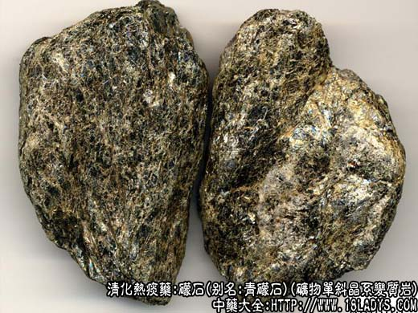

1、青礞石
本品为少常用中药，始栽《嘉祐本草》。商品因颜色不同，分为青礞石与金礞石两种。
来源：为矿物单斜晶系，绿泥石片岩是一种很普通的变质岩，主要由绿泥石（含铁、镁、铝的硅酸盐，云母片状矿物）组成。
产地：主产于浙江、江苏、湖北、河北等地。
性状鉴别：呈不规则的扁斜块状，大小不等。表面青灰色或灰绿色，微带绢丝样光泽。破开面有白星点，闪闪发光。体重质软，用指甲可划下碎粉末，捻之松软，略有滑腻感。气无味淡。
以块整齐，色青，有光泽，无杂质者为佳。
主要成分：含硅酸盐。
药理作用：去积痰。除结热，定惊悸，其作用似为祛痰，镇静。
炮制：生用或煅用。
性味：甘、寒、平。
归经：入肺、肝经。
功能：消积化痰，止嗽定喘。
主治：痰壅气喘，惊痫抽搐，顽痰结聚，食积刺痛。
临床应用：专治顽痰积结而引起的病证，中医认为谈滞于心则有心神不宁，夜不能寐，甚至精神失常。痰滞于筋络则有四肢酸痛，屈伸不灵。痰滞于脾胃或肠间，则有嗳气吞酸，脘腹胀痛。以上病证如确与顽痰（痰涎粘腻壅塞、舌苔厚腻、脉骨）有关，可在治疗方剂内适当加入礞石。如顽痰属于实热老痰，引起惊悸抽搐、痰涎上壅、大便秘结，甚至高热昏迷，则以礞石配黄芩清热、大黄扫荡实积、沉香理气作药引，共同起到荡涤实热老痰的作用，方如礞石滚痰丸，此方药力较峻猛，取效较速，故名滚痰。一般只用于急症而体实者，如症属慢性病而又病体虚弱，则不宜用或少用。如欲药性稍缓者，可配竹沥、半夏、陈皮等，方如竹沥达痰丸。
使用注意：孕妇、气血弱者不宜用礞石。
用量：入丸散剂1.5～3g。
处方举例：礞石滚痰丸：礞石30g，大黄240g，黄芩240g，沉香15g，为细末，制丸，每次4.5～9g温开水送下。
2、金礞石
来源：为矿物云母片岩中的云母属金云母的矿石。
产地：主产于湖北、河南、山西等地。
性状鉴别：呈不规则的块状或碎粒状，大小不等。全体呈绿黄棕色，带有金黄色光泽。质脆，较松软，易碎，手捻之呈鳞片样薄片。气微味淡。
以块整，色金黄，无杂质者为佳。
炮制：生用或煅用。
性味：甘、咸、平。
归经：入肺、肝经。
功能：止嗽消痰、镇惊导滞。
主治：内热惊风，咳嗽痰稠，食积作喘，癫痫气逆。